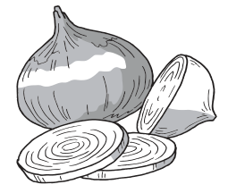

1. 山本さんはクラスの代表に選ばれた。
問題1 のことばの読み方として最もよいものを、1・2・3・4から一つえらびなさい。
2. 3日前から雨が続いている。
問題2 のことばを漢字で書くとき、最もよいものを、1・2・3・4から一つえらびなさい。
3. アルバイトのめんせつは来週の土曜日だ。
4. 困っているときに、先生にたすけていただきました。
問題3 （ ）に入れるのに最もよいものを、1・2・3・4から一つえらびなさい。
5. （ ）寝たので、気持ちがいい。
6. ここのパソコンは誰でも使えますが、コピーは（ ）です。
問題4 に意味が最も近いものを、1・2・3・4から一つえらびなさい。
7. 次々に新しいゲームが作られる。
8. 明日の飛行機の予約を確認してください。
問題5 つぎのことばの使い方として最もよいものを、一つえらびなさい。
9. 今ごろ
10. かわいがる
問題1 つぎの文の（ ）に入れるのに最もよいものを、1・2・3・4から一つえらびなさい。
1. 父が短気なの（ ）、母の方は気が長い。
2. A「時間ありますか。」
B「ええ、1時間（ ）ありますよ。」
B「ええ、1時間（ ）ありますよ。」
問題2 つぎの文の ★ に入る最もよいものを、1・2・3・4から一つえらびなさい。
（問題例）
つくえの _ _ ★ _ あります。
（解答の仕方）
1．正しい文はこうです。
| つくえの | _ | _ | ★ | _ | あります。 |
| 3 上 | 2 に | 4 ペン | 1 が |
2．★に入る番号を解答用紙にマークします。
（解答用紙）
| （例） | ① | ② | ③ | ● |
3. 先週 _ _ ★ _ から、行ってみませんか。
4. A「田中さんはダンスが上手ですよね。」
B「そうですね。どうやったら _ _ ★ _ 不思議に思います。」
B「そうですね。どうやったら _ _ ★ _ 不思議に思います。」
問題3 つぎの文章を読んで、5から9の中に入る最もよいものを、1・2・3・4から一つえらびなさい。
富士山の思い出
ヒエン
今年の夏休みに、初めて富士山に登りました。富士山は日本でいちばん高い山で、3776メートルもあります。［5］はわたしの国にはありません。それで、留学したら、ぜひ登ってみたいと思っていました。
富士山の途中までバスで行って、夜10時ごろから登り始めました。山の上で朝日を見るために夜中も歩かなければなりませんでした。登山の途中で、［6］と思いました。なぜかというと、夏でも富士山の上のほうは本当に寒かったし、予想よりも山の道を歩くのは大変で、足も痛かったからです。［7］、山の上に着いて朝日を見たら、それまでの疲れが消えてしまいました。突然、目の前に広がる雲の間から朝日が［8］。今まで見た中でいちばん美しい朝日でした。一生忘れないだろうと思います。
とてもすばらしい［9］。
5.
6.
7.
8.
9.
問題4 つぎの文章を読んで、質問に答えなさい。答えは、1・2・3・4から最もよいものを一つえらびなさい。
2009年7月15日
さくら株式会社
営業部 御中
ABC株式会社
輸出入部 ヤン・イシイ
拝啓
わが社は、日本のアクセサリーやバッグ、くつなどを過去10年以上アジア各国に輸出しております。
先日、さくら株式会社様のホームページ上にて新しいバッグのカタログを拝見しました。ぜひ輸出を検討したく思いますので、最新のバッグのカタログと価格表を今月中に送っていただけないでしょうか。
よろしくお願いいたします。
10. この手紙の中の会社について、正しいのはどれか。
問題5 つぎの文章を読んで、質問に答えなさい。答えは、1・2・3・4から最もよいものを一つえらびなさい。
海外旅行をするときの一般的な方法には、ガイドと一緒の「パック旅行」があるが、フリーツアー（※1）というものもある。
パック旅行は、目的地までの往復の交通や宿泊、観光などがパッケージ（※2）になっているので、その名がある。すべてが決められているので、大変便利だが、団体行動をしなければならない。もっとゆっくり見たいなと思うような場所でも、決められたスケジュールにしばられる。
その点、フリーツアーは往復の交通手段と宿泊先が決められているだけで、それ以外は自由＝フリーだ。目的地での行動を自由に決めて、移動に必要な鉄道やバスなどの切符もいっしょに申し込むことができる。ただ、フリーツアーでも注意しなければならない点がある。一度ツアー料金を払ってしまったら、往復の飛行機やホテルは変えられないし、キャンセルする場合は出発日の3週間も前からキャンセル料を取られてしまう。自分なりの計画をきちんと立てて、自由な旅を楽しもう。
（※1）ツアー：旅行のこと
（※2）パッケージ：関係あるものを一つにまとめたもの
11. ガイドと一緒の「パック旅行」のいい点はどんなところだと言っているか。
12. 「フリーツアー」のいい点はどんなところだと言っているか。
13. 「フリーツアー」で注意しなければならない点はどんなことだと言っているか。
問題6 つぎの文章を読んで、質問に答えなさい。答えは、1・2・3・4から最もよいものを一つえらびなさい。
玉ねぎ（※1）を切るとき、涙が出て困った経験はだれにでもあるだろう。
①涙が出る原因は、玉ねぎの中に入っている「アリシン」である。アリシンは、常温（※2）で空気中に出ていく性質（※3）があり、玉ねぎを切るときに飛び出す。そして、呼吸したりするときに体の中に入ってきて、涙を出させるのである。
では、これを防ぐにはどうしたらいいだろうか。以下のような方法がある。
A 台所の換気扇をつける。
B 鼻にティッシュペーパーをつめる。
C 玉ねぎをいくつかに切って水につけておく。
D 玉ねぎを冷蔵庫に入れて冷やしておく。
E 包丁に熱湯をかけてから切る。
F 玉ねぎを電子レンジで温めておく。
これらの方法は二つのタイプに分けられる。一つは、②空気中に出たアリシンが体に入るのを防ぐタイプである。もう一つは、アリシンが空気中に出るのを防ぐタイプで、こちらはアリシンの性質を利用する方法だ。アリシンには、水に溶けやすい、冷たいと外に出にくい、熱で壊れやすい、という性質がある。玉ねぎを冷やしたり、熱い包丁を使ったりするのは、少し時間が経つと効果がなくなる。これに対して、玉ねぎを水につけておいたり、③レンジで温めたりするやり方は、効果が高いようだ。
しかし、実はアリシンは体にいいものなのだ。それが水に流れ出たり、熱で壊れたりしてしまう。このため、涙は出にくくなるが、アリシンが減ってしまうという欠点がある。これらのことを考えて、④一番いいと思う方法を選ぶといいだろう。
（※1）玉ねぎ…野菜の名前

（※2）常温：15度から25度ぐらいの気温
（※3）性質：物がもっている性格や特徴
14. ①涙が出る原因は、玉ねぎの中に入っている「アリシン」であるとあるが、玉ねぎを切っているとき、涙が出てくるのはどうしてか。
15. ②空気中に出たアリシンが体に入るのを防ぐタイプとあるが、これは文章の中のどの方法か。
16. ③レンジで温めたりするやり方とあるが、この方法の特徴について正しく説明しているのはどれか。
17. ④一番いいと思う方法を選ぶといいだろうとあるが、ここで言いたいことはどんなことか。
問題7 つぎの文章は、クラスで日本語を学ぶ人を募集するための案内である。下の質問に答えなさい。答えは、1・2・3・4から最もよいものを一つえらびなさい。
18. ユリナさんが、とることのできるクラスはどれか。
19. ユリナさんは、何月何日までに申し込まなければならないか。
ユリナさんは、市民センターで日本語を勉強したいと考えています。できれば漢字も勉強したいと思っています。
ユリナさんの仕事は8時から5時までで、お休みは毎週水曜日と日曜日です。
外国人のみなさん、日本語を勉強しませんか
●場所…市民センター
●先生…国際交流しよう市民の会
●申込方法…3月1日から4月5日までの間に、申込書に必要なことを書いて、市民センターに出してください。申込書は、市民センターにおいてあります。
●説明会…4月8日（日）の午前11時から市民センターで、説明会をします。
●期間…授業は4月10日（火）～9月14日（金）です。
●費用…テキスト代だけ払ってください。
●時間割
| クラス名 | 曜日 | 午前 （10時～11時30分） | 午後 （13時～14時30分） | 夜 （19時～20時30分） |
|---|---|---|---|---|
| （1）会話A | 火 | ○ | ||
| （2）会話B | 水 | ○ | ||
| （3）日本語A | 木 | ○ | ||
| （4）日本語B | 金 | ○ | ||
| （5）漢字A | 土 | ○ | ||
| （6）漢字B | 日 | ○ |
【注意】
・AとBの内容は同じです。
・「漢字」のクラスをとる人は、「日本語」のクラスもとってください。
End of available questions